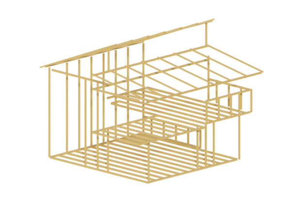
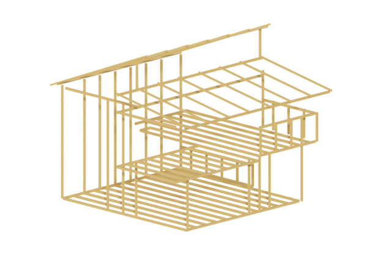

Anatomy of a Sustainable House
 



Our planet’s resources are finite. We want homes that reflect our commitment to using those resources responsibly — but what, exactly, does an environmentally sustainable home look like?
Sustainability can feel pretty complicated. After a few minutes of research, you’re deep in a digital rabbit hole digesting the principles of thermal inertia or the latest advances in organic bioclimactic architecture. And wait — have you brushed up on the importance of selecting responsibly sourced grout to complement your home’s bathroom tiles?
The anatomy of a sustainable home isn’t actually as complex as you might think. With some basic knowledge of thoughtful design, well-selected materials and insulation, and proper conservation techniques, you’ll see that a sustainable home isn’t out of reach. Just take a look inside:
Go to:
Design
Every day, the sun provides the earth with 10,000 times the total energy consumed by humans. A truly sustainable design lets us capture more of that energy — and make the most of it.
Click the icons to learn more
Large, south-facing windows are great for harvesting sunlight when you need it. During the winter, the sun’s low position allows you to capture more heat. In the hotter months when the sun is higher in the sky, a proper overhang can keep things shady.
Take a simple approach. Homes with low surface area are easy to heat and cool. Avoid protruding nooks or sprawling layouts. Emphasize shared spaces.


Materials
Building a standard 2,500 square foot home creates 2 tons of construction waste. That’s the weight of an average American car going straight to the landfill for each home built.
Click the icons to learn more
Make a slight pivot to more sustainable options. Locally sourced materials cut down on needless transportation costs during the construction process. Bamboo is a rapidly renewable, attractive alternative to traditional wood floors.
Opt for materials with high thermal mass, like cement or dark stone. They absorb the sun’s warmth during the day, then release that heat during the night. Keeps things nice and toasty.
Insulation
20% of the United States’ annual energy use comes from heating and cooling our homes. Insulation can make a big difference.
Click the icons to learn more
Your insulation options might surprise you. Consider using finely shredded newspaper, old blue jeans, sheep’s wool, or greensulate made from mushroom fibers.
Windows with multiple panes of glass help control heat transfer into your home. Look for glass with “low-e” coating. It’s made from microscopic layers of metallic oxides. You won’t notice a difference in the glass, but you’ll notice a difference in your electric bill.

Power
The power consumption needs of our country could be met by solar panels covering an area of just 0.6% of the continental U.S.
Click the icons to learn more
Each year, solar panels can decrease your home’s carbon footprint by over 35,000 pounds of carbon dioxide. That’s the equivalent of 88 trees.
A rooftop wind turbine can generate up to 25% of the electricity required for a domestic household. Consider combining both solar panels and wind turbines. You’ll have the capacity to generate energy whether it’s sunny or overcast.


Gray water
Not all wastewater is created equally. Gray water accounts for 60% of the outflow produced by our homes and it requires minimal filtering to reuse.
Click the icons to learn more
Save up to 30% on your monthly water bill by capturing and repurposing gray water from your home. Your method can be as simple as placing a bucket under your faucet, or as complex as installing a solar-powered filtration system.
The easiest way to repurpose your home’s gray water is by diverting it outdoors. Nutrients in gray water like phosphorus and nitrogen can be a great food source for your plants. With some minor treatment, it’s a perfect way to irrigate your garden.